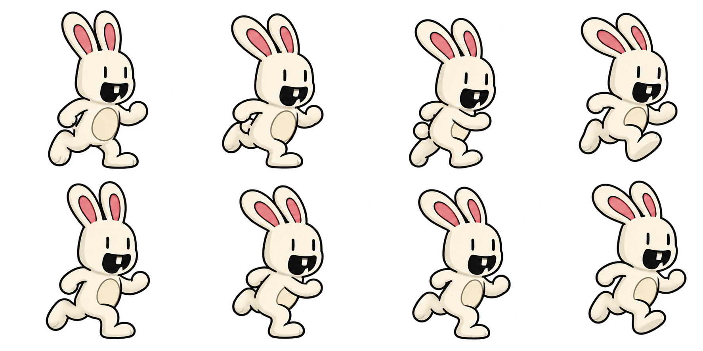
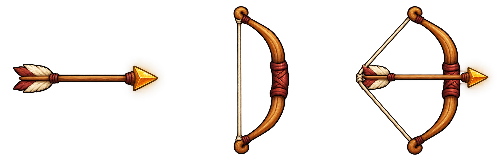

The bow and five recharging arrows wait in a different labyrinth corridor each run. One spent arrow returns every three seconds: normal 89% (one heart), fire 10% (two hearts), rainbow 1% (three hearts). Carry it up the second volcano, then move left/right, aim up/down and fire. Stow the arrow to run and jump normally; its image stays on the bunny’s back. In the labyrinth, climb up/down with it equipped or stowed. Aiming disables jumps. The dotted arc shows its flight. Arrows can knock out fireballs; the king’s shield blocks shots from the front.
Running with the arrow stowed — jumping is available.
Keyboard: ← → move, ↑ ↓ aim, X or F fire. Z or the extra STOW/EQUIP button puts the arrow away or draws it in the labyrinth, on the second climb and at the summit. When stowed, ↑ or Space jumps on the hills and summit; ↑ ↓ climbs in the labyrinth. Touch: drag the stick to move or aim, tap FIRE to shoot and STOW to return to jumping.

